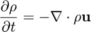
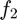
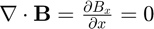
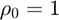
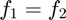
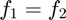
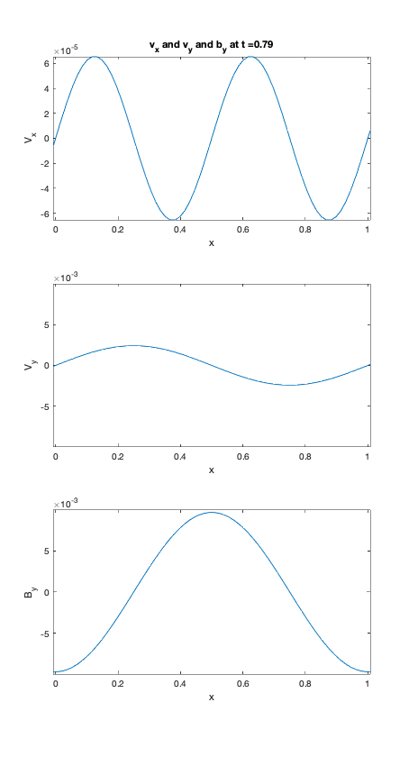
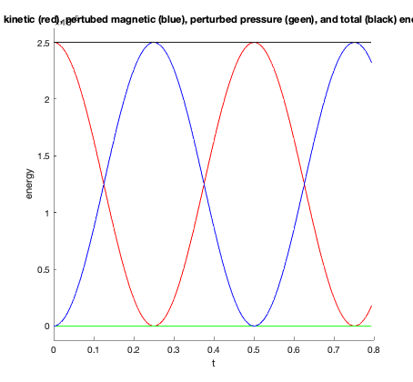
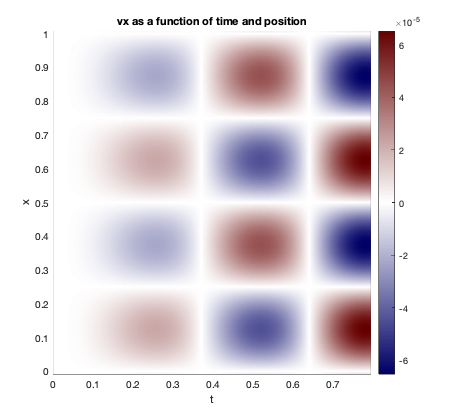

Finite difference scheme for 1D MHD equations
example code for topic 1, solving the MHD equations in 1D using finite difference approximation

Contents
- Initialization and simulation constants
- Generate a 1-D Grid x
- Define plasma and magnetic field Variables
- Set up initial conditions.
- Set up initial conditions - the  stage
- Prepare for plots/diagnostics
- The Main Loop over time - from t = 0 to t = tsim
- Diagnostics
- Now we use a two step procedure to advance the fields. This is in
- Final Plots/diagnostics for energies and velocities
close all; clear all;
Initialization and simulation constants
define parameters such as grid point, simulation constants, perturbation properties etc.
nid = 64; % nid= number of data grid points. vpert = .01; % vpert= amplitude of velocity perturbation idirpert = 2; % idirpert = integer indicating direction of velocity perturbation, % =1 for x direction % =2 for y direction % = anything else for both beta = 1; % beta= plasma beta gamma=5/3; % gamma = ratio of specific heats dt = .005; % dt= time step tsim = 0.8; % tsim= total time of simulation tfldout = 0.01; % tfldout= time between plots of field quantities tpause = 0.2; % tpause= pause time in seconds after field plots iTravelingWave= 0; % iTravelingWave = 1 for traveling wave to right or -1 for traveling wave % to left; any other value leads to standing wave
Generate a 1-D Grid x
The total number of grid points is ni= nid+2. There are two "buffer" grid points with grid index i=1 and ni=nid+2.
ni = nid+2; % ni= total number of grid points, including 2 boundary cells nt = round(tsim/dt); % nt= total simulation time steps, 'round' to make sure result is an integer nfldout = tfldout/dt; % nfldout for field plots every nfldout=tfldout/dt time steps (if tfldout>0). x = zeros(ni,1); % Initialize x positions. Caution: Not!! zeros(ni) dx= 1./nid; % delta x for i= 1:ni x(i)= (i-1.5)*dx; % generate grid points end % Alternately, x = ( (1:ni).' - 1.5 )*dx;
Define plasma and magnetic field Variables
- subscripts 1 and 2 refer to the predictor and corrector steps used in the leapfrog trapezoidal scheme
- The i grid is oriented in the x direction
- x = x position
d1 = zeros(ni,1); % d1,d2 = density at times 1 and 2 d2 = zeros(ni,1); vx1 = zeros(ni,1); % vx1,vx2 = x component of fluid velocity at times 1 and 2 vx2 = zeros(ni,1); vy1 = zeros(ni,1); % vy1,vy2 = y component of fluid velocity at times 1 and 2 vy2 = zeros(ni,1); by1 = zeros(ni,1); % by1,by2 = y component of magnetic field at times 1 and 2 by2 = zeros(ni,1); p = zeros(ni,1); % p = pressure dfx = zeros(ni,1); % dfx = density flux in x direction = d*vx ez = zeros(ni,1); % ez = z component of electric field cz = zeros(ni,1); % cz = z component of current temp= .5*beta; % The temperature is beta/2 (beta= d*temp/(b**2/2) = 1*temp/(1/2) ). p0= 1*temp; % normalized pressure pi2= 2*pi; % Multiples of pi - very old-school... dx2= dx*2.; % Useful quantity to be used in taking x derivatives- again, very old school...
Set up initial conditions.
- bx0= a constant since in 1-D: 
-  - initial density is constant along x-direction
- idirpert determines what kind of initial "perturbation" is used
bx0= 1.; % choose a constant Bx = 1 for i= 1:ni d1(i)= 1.; by1(i)= 0.; end % Alternately, d1(:) = 1; by1(:) = 0; if( idirpert==1 ) % perturbe in the x-direction velocity only for i= 1:ni vx1(i)= vpert*sin( pi2*x(i) ); vy1(i)= 0.; end % Alternately, vx1 = vpert*sin( pi2*x ); elseif( idirpert==2 ) % perturbe in the y-direction velocity only for i= 1:ni vx1(i)= 0.; vy1(i)= vpert*sin( pi2*x(i) ); end else % perturbe in the both velocity components for i= 1:ni vx1(i)= vpert*sin( pi2*x(i) ); vy1(i)= vx1(i); end end if( abs(iTravelingWave)==1 ) % set By perturbation based on traveling or standing wave solutions - see notes by1 = - iTravelingWave*vy1; % For superposition of two traveling waves of form exp(k*x - omega*t) end
Set up initial conditions - the stage
Since the Leapfrog-Trapezoidal scheme requires two steps, the predictor step  and the corrector step , for the first calculation, we use 
and the corrector step , for the first calculation, we use 
d2= d1; vx2= vx1; vy2= vy1; by2= by1;
Prepare for plots/diagnostics
- ScreenSize is a four-element vector for the screen size in pixels: [left, bottom, width, height]:
- use the get function to determine the size of the figures - flexible for different computer systems
- vx_2d is a keogram showin the velocity variation as a function of space (vertical-axis) and time (horizontal-axis)
ss = get(0,'ScreenSize'); ss3 = ss(3); ss4 = ss(4); i2dfld = 0; vx_2d = zeros(ni,1); % (eventually) 2D array for time dependent plot of vx
The Main Loop over time - from t = 0 to t = tsim
this is the for-loop code marching in time, going from t to t+dt using the leapfrog-trapezoidal scheme for time differencing and the central difference scheme for spatial differencing, both are second-order accuracy
vxmax_plot=-1; % limits used in plotting vymax_plot=-1; bymax_plot=-1; for it= 1:nt % the main time loop if( it==1 ) % Define t= time t= 0.; else t= t + dt; % evolv the simulation t+ = dt end
Diagnostics
- Field plots only every nfldout time steps
- (mod(a,b) gives the remaider of a/b.)
if( nfldout>0 && mod(it-1,nfldout)==0 ) figure(1) set(gcf,'Position',[0.03*ss3 0.1*ss4 0.27*ss3 0.80*ss4]); subplotrc(3,1,1,1) vxmax_plot= max( [ vxmax_plot ; abs(vx2) ] ); plot(x,vx2) xlim([ x(1) x(ni) ]) if( vxmax_plot>0 ) ylim([ -vxmax_plot vxmax_plot ]) end title(strcat('v_x and v_y and b_y at t =',num2str(t))); % title(['v_x and v_y and b_y at t =' num2str(t)]); xlabel('x') ylabel('V_x') subplotrc(3,1,2,1) vymax_plot= max([ vymax_plot ; abs(vy2) ]); plot(x,vy2) xlim([ x(1) x(ni) ]) if( vymax_plot>0 ) ylim([ -vymax_plot vymax_plot ]) end xlabel('x') ylabel('V_y') subplotrc(3,1,3,1) bymax_plot= max([ bymax_plot ; abs(by2) ]); plot(x,by2) xlim([ x(1) x(ni) ]) if( bymax_plot>0 ) ylim([ -bymax_plot bymax_plot ]) end xlabel('x') ylabel('B_y') disp(['Simulation Time = ',num2str(t)]); pause(tpause) end % Calculate energies. ven= kinetic energy, ben= magnetic energy, % pen= pressure energy. An adiabatic relation between pressure and % density is assumed, pressure p = p0*d**gamma. ten= total energy. ven= 0.; ben= 0.; pen= 0.; for i= 2:ni-1 p(i)= p0 * (d2(i)^gamma); ven= ven + .5 * d2(i) * ( vx2(i)^2 + vy2(i)^2 ); ben= ben + .5 * by2(i)^2; pen= pen + (p(i)-p0) / (gamma-1.); end % Divide by nid to get energy per grid point. ven= ven/nid; ben= ben/nid; pen= pen/nid; ten= ven + ben + pen; t_save(it)= t; ven_save(it)= ven; ben_save(it)= ben; pen_save(it)= pen; ten_save(it)= ven + ben + pen; % Alternately, % t_save(it)= t; % ven_save(it)= 0.5 * sum( d2(2:ni-1) .* ( vx2(2:ni-1).^2 + vy2(2:ni-1).^2 ) ) / nid; % ben_save(it)= 0.5 * sum( by2(2:ni-1).^2 ) / nid; % pen_save(it)= sum( p(2:ni-1) - p0 ) / (gamma-1) / nid; % ten_save(it)= ven_save(it) + ben_save(it) + pen_save(it);
Now we use a two step procedure to advance the fields. This is in
order to make the time differencing more accurate. 1. First, calculate pressure, e-field, current and mass flux 2. second, advance quatities 1/2 time step (predictor step). 3. switch $f_1$ and $f_2$ 4. the corrector step
for i= 1:ni % Calculate pressure, electric field, current, and density flux. p(i)= p0 * (d2(i)^gamma); ez(i)= - ( vx2(i)*by2(i) - vy2(i)*bx0 ); dfx(i)= d2(i) * vx2(i); end for i= 2:ni-1 % Calculate current - pay attention to the index cz(i)= ( by2(i+1) - by2(i-1) ) / dx2; end for i= 2:ni-1 d1(i)= 0.5*(d1(i)+d2(i)) - dt*( dfx(i+1) - dfx(i-1) )/dx2; % Order of eqns doesn't matter here by1(i)= 0.5*(by1(i)+by2(i)) + dt*( ez(i+1) - ez(i-1) )/dx2; vx1(i)= 0.5*(vx1(i)+vx2(i)) + dt*(... % Note "..." for continuation -vx2(i)*( vx2(i+1) - vx2(i-1) )/dx2... +( -( p(i+1) - p(i-1) )/dx2 -cz(i)*by2(i) )/d2(i) ); vy1(i)= 0.5*(vy1(i)+vy2(i)) + dt*( ... -vx2(i)*( vy2(i+1) - vy2(i-1) )/dx2... +cz(i)*bx0/d2(i) ); end [d1,d2] = switch_aa_aa(d1,d2); [by1,by2] = switch_aa_aa(by1,by2); [vx1,vx2] = switch_aa_aa(vx1,vx2); [vy1,vy2] = switch_aa_aa(vy1,vy2); if( it==1 ) % At the first time step, the number 2 quantities are now a full time step % ahead of the original t_2 (because the original fields were both specified at % the same initial time = 0). So we average the number 1 and 2 quantities to % get the quantities at the half time step so we can be prepared for the final % corrector step. d2 = 0.5*( d1 + d2 ); by2= 0.5*( by1 + by2 ); vx2= 0.5*( vx1 + vx2 ); vy2= 0.5*( vy1 + vy2 ); end % Fix buffer values. d2(1)= d2(ni-1); d2(ni)= d2(2); by2(1)= by2(ni-1); by2(ni)= by2(2); vx2(1)= vx2(ni-1); vx2(ni)= vx2(2); vy2(1)= vy2(ni-1); vy2(ni)= vy2(2); % Calculate electric field, current, and density flux. ez= - ( vx2.*by2 - vy2.*bx0 ); dfx= d2 .* vx2; p= p0*(d2.^gamma); for i= 2:ni-1 cz(i)= ( by2(i+1) - by2(i-1) ) / dx2; end % Advance quatities one full time step (corrector step). Since we use % vx2 in the vy2 equation, and d2 and by2 in the vx2 equation, it's important % that the vy2 equation be evaluated before the vx2 equation, and that % the d2 and by2 equations be evaluated after the vx2 equation. for i= 2:ni-1 vy2(i)= vy1(i) + dt*( ... -vx2(i)*( vy2(i+1) - vy2(i-1) )/dx2 ... +cz(i)*bx0/d2(i) ); vx2(i)= vx1(i) + dt*( ... -vx2(i)*( vx2(i+1) - vx2(i-1) )/dx2 ... +( -( p(i+1) - p(i-1) )/dx2 -cz(i)*by2(i) )/d2(i) ); d2(i)= d1(i) - dt*( dfx(i+1) - dfx(i-1) )/dx2; by2(i)= by1(i) + dt*( ez(i+1) - ez(i-1) )/dx2; end % end of 'for i=' % Fix buffer values. d2(1)= d2(ni-1); d2(ni)= d2(2); by2(1)= by2(ni-1); by2(ni)= by2(2); vx2(1)= vx2(ni-1); vx2(ni)= vx2(2); vy2(1)= vy2(ni-1); vy2(ni)= vy2(2); i2dfld = i2dfld + 1; t2dfld(1,i2dfld) = t; % save time for axis label vx_2d(:,i2dfld) = vx2; end% end of 'for it='
Simulation Time = 0 Simulation Time = 0.01 Simulation Time = 0.02 Simulation Time = 0.03 Simulation Time = 0.04 Simulation Time = 0.05 Simulation Time = 0.06 Simulation Time = 0.07 Simulation Time = 0.08 Simulation Time = 0.09 Simulation Time = 0.1 Simulation Time = 0.11 Simulation Time = 0.12 Simulation Time = 0.13 Simulation Time = 0.14 Simulation Time = 0.15 Simulation Time = 0.16 Simulation Time = 0.17 Simulation Time = 0.18 Simulation Time = 0.19 Simulation Time = 0.2 Simulation Time = 0.21 Simulation Time = 0.22 Simulation Time = 0.23 Simulation Time = 0.24 Simulation Time = 0.25 Simulation Time = 0.26 Simulation Time = 0.27 Simulation Time = 0.28 Simulation Time = 0.29 Simulation Time = 0.3 Simulation Time = 0.31 Simulation Time = 0.32 Simulation Time = 0.33 Simulation Time = 0.34 Simulation Time = 0.35 Simulation Time = 0.36 Simulation Time = 0.37 Simulation Time = 0.38 Simulation Time = 0.39 Simulation Time = 0.4 Simulation Time = 0.41 Simulation Time = 0.42 Simulation Time = 0.43 Simulation Time = 0.44 Simulation Time = 0.45 Simulation Time = 0.46 Simulation Time = 0.47 Simulation Time = 0.48 Simulation Time = 0.49 Simulation Time = 0.5 Simulation Time = 0.51 Simulation Time = 0.52 Simulation Time = 0.53 Simulation Time = 0.54 Simulation Time = 0.55 Simulation Time = 0.56 Simulation Time = 0.57 Simulation Time = 0.58 Simulation Time = 0.59 Simulation Time = 0.6 Simulation Time = 0.61 Simulation Time = 0.62 Simulation Time = 0.63 Simulation Time = 0.64 Simulation Time = 0.65 Simulation Time = 0.66 Simulation Time = 0.67 Simulation Time = 0.68 Simulation Time = 0.69 Simulation Time = 0.7 Simulation Time = 0.71 Simulation Time = 0.72 Simulation Time = 0.73 Simulation Time = 0.74 Simulation Time = 0.75 Simulation Time = 0.76 Simulation Time = 0.77 Simulation Time = 0.78 Simulation Time = 0.79
Final Plots/diagnostics for energies and velocities
max_e = max([ten_save pen_save ven_save ben_save]); min_e = min([ten_save pen_save ven_save ben_save]); figure(2); set(gcf,'Position',[0.35*ss3 0.15*ss4 0.27*ss3 0.40*ss4]); hold on; plot(t_save,ven_save,'r'); plot(t_save,pen_save,'g'); plot(t_save,ben_save,'b'); plot(t_save,ten_save,'k'); hold off; range_e = max_e - min_e; ylim([min_e-.05*range_e max_e+.05*range_e]); xlabel('t') ylabel('energy') title(' kinetic (red), pertubed magnetic (blue), perturbed pressure (geen), and total (black) energy') figure(3) set(gcf,'Position',[0.67*ss3 0.15*ss4 0.27*ss3 0.40*ss4]); pcolor(t2dfld,x,vx_2d) shading interp blueTan = colormap_bluetan; colormap(blueTan) colorbar xlabel('t') ylabel('x') title('vx as a function of time and position') 